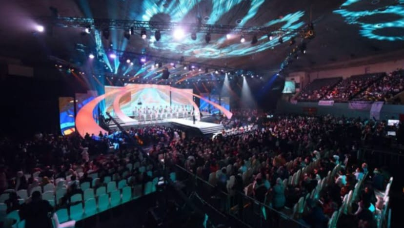
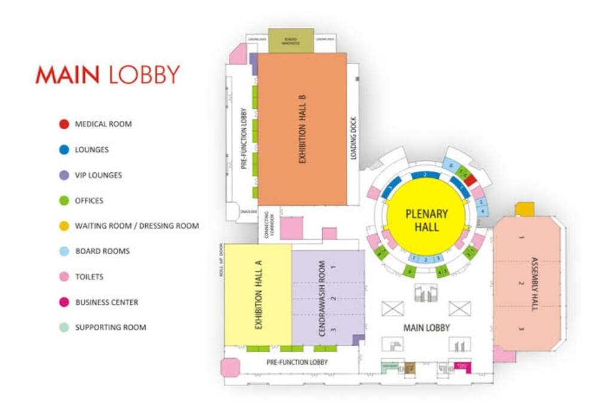

About Us

Located in the heart of the city, our convention center offers a versatile and dynamic space suitable for a
wide range of events, including conferences, exhibitions, trade shows, corporate meetings, gala dinners, weddings, and more.
Our modern and well-equipped venues can be customized to meet your specific requirements, whether you're hosting an intimate
gathering or a large-scale convention. Our dedicated team of event specialists is committed to providing personalized
attention and assistance at every step of the planning process. From conceptualization to execution, we work closely
with our clients to ensure their vision is brought to life. With our expertise and attention to detail, we guarantee
seamless event management, allowing you to focus on what matters most - your guests and the success of your event.

Complementing our world-class facilities, we provide a comprehensive range of services to meet your event needs.
From catering and dining options featuring delicious cuisine to expert event planning assistance, we strive to deliver
excellence in every aspect. Our team is dedicated to creating a seamless and unforgettable event experience for you and your guests.
Whether you're planning a corporate event or a social gathering, Jockey's Convention Center is the perfect choice.
We are committed to exceeding your expectations and creating an environment that inspires creativity, collaboration, and celebration.
We invite you to explore our website, browse our venues, and get in touch with our team to discuss your event requirements.
Let Jockey's Convention Center be the destination for your next extraordinary event.
